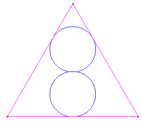
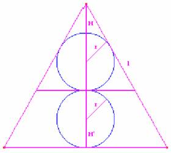

Solución del problema 78
Alicia y Maite Peña Alcaraz, alumnas del Colegio Porta Celi de Sevilla (19 de febrero de 2003)
1 Construir la siguiente figura donde el triángulo es equilátero y las dos circunferencias tienen el mismo radio.

Ampliación del editor:
¿Cuanto mide el radio de la circunferencia si el lado del triángulo mide 10 cm?

Si nos centramos en la primera circunferencia, sabiendo que es la circunferencia circunscrita de un triángulo equilátero, sabemos que la bisectriz coincide con la mediana del triángulo. Por ello, una propiedad de las medianas es que se cortan a 2/3 partes de distancia del vértice, luego el radio de la primera circunferencia será la tercera parte de la altura del triángulo equilátero pequeño.Al añadir otra circunferencia de igual radio, se añaden 2/5 partes de la altura del triángulo equilátero final (dos radios a la distancia de tres radios ya existente). Es entonces evidente que el radio será la quinta parte de la altura del triángulo.
Para construir las circunferencias a partir del triángulo bastará con dividir en cinco partes la altura a partir del teorema de Tales, y en el 2º y 4º punto estarán los centros de las circunferencias.
Si el lado del triángulo fuera de lado 10cm, como la altura de un triángulo equilátero es:
H=cos 60º l ;
Siendo l el lado del triángulo, la altura será igual que